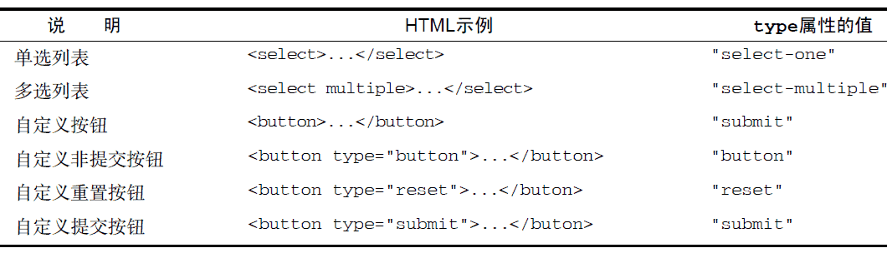

14.1.3 表单字段
可以像访问页面中的其他元素一样，使用原生DOM 方法访问表单元素。此外，每个表单都有elements 属性，该属性是表单中所有表单元素（字段）的集合。这个elements 集合是一个有序列表，其中包含着表单中的所有字段，例如<input>、<textarea>、<button>和<fieldset>。每个表单字段在elements 集合中的顺序，与它们出现在标记中的顺序相同，可以按照位置和name 特性来访问它们。下面来看一个例子。
var form = document.getElementById("form1");
//取得表单中的第一个字段
var field1 = form.elements[0];
//取得名为"textbox1"的字段
var field2 = form.elements["textbox1"];
//取得表单中包含的字段的数量
var fieldCount = form.elements.length;
如果有多个表单控件都在使用一个name（如单选按钮），那么就会返回以该name 命名的一个NodeList。例如，以下面的HTML 代码片段为例。
<form method="post" id="myForm">
<ul>
<li><input type="radio" name="color" value="red">Red</li>
<li><input type="radio" name="color" value="green">Green</li>
<li><input type="radio" name="color" value="blue">Blue</li>
</ul>
</form>
运行一下
在这个HTML 表单中，有3 个单选按钮，它们的name 都是"color"，意味着这3 个字段是一起的。
在访问elements["color"]时，就会返回一个NodeList，其中包含这3 个元素；不过，如果访问elements[0]，则只会返回第一个元素。来看下面的例子。
var form = document.getElementById("myForm");
var colorFields = form.elements["color"];
alert(colorFields.length); //3
var firstColorField = colorFields[0];
var firstFormField = form.elements[0];
alert(firstColorField === firstFormField); //true
运行一下
以上代码显示，通过form.elements[0]访问到的第一个表单字段，与包含在form.elements["color"]中的第一个元素相同。
也可以通过访问表单的属性来访问元素，例如form[0]可以取得第一个表单字段，而form["color"]则可以取得第一个命名字段。这些属性与通过elements 集合访问到的元素是相同的。但是，我们应该尽可能使用elements，通过表单属性访问元素只是为了与旧浏览器向后兼容而保留的一种过渡方式。
1. 共有的表单字段属性
除了<fieldset>元素之外，所有表单字段都拥有相同的一组属性。由于<input>类型可以表示多种表单字段，因此有些属性只适用于某些字段，但还有一些属性是所有字段所共有的。表单字段共有的属性如下。
-
disabled：布尔值，表示当前字段是否被禁用。
-
form：指向当前字段所属表单的指针；只读。
-
name：当前字段的名称。
-
readOnly：布尔值，表示当前字段是否只读。
-
tabIndex：表示当前字段的切换（tab）序号。
-
type：当前字段的类型，如"checkbox"、"radio"，等等。
-
value：当前字段将被提交给服务器的值。对文件字段来说，这个属性是只读的，包含着文件在计算机中的路径。
除了form 属性之外，可以通过JavaScript 动态修改其他任何属性。来看下面的例子：
var form = document.getElementById("myForm");
var field = form.elements[0];
//修改value 属性
field.value = "Another value";
//检查form 属性的值
alert(field.form === form); //true
//把焦点设置到当前字段
field.focus();
//禁用当前字段
field.disabled = true;
//修改type 属性（不推荐，但对<input>来说是可行的）
field.type = "checkbox";
能够动态修改表单字段属性，意味着我们可以在任何时候，以任何方式来动态操作表单。例如，很多用户可能会重复单击表单的提交按钮。在涉及信用卡消费时，这就是个问题：因为会导致费用翻番。
为此，最常见的解决方案，就是在第一次单击后就禁用提交按钮。只要侦听submit 事件，并在该事件发生时禁用提交按钮即可。以下就是这样一个例子。
//避免多次提交表单
EventUtil.addHandler(form, "submit",
function(event) {
event = EventUtil.getEvent(event);
var target = EventUtil.getTarget(event);
//取得提交按钮
var btn = target.elements["submit-btn"];
//禁用它
btn.disabled = true;
});
运行一下
以上代码为表单的submit 事件添加了一个事件处理程序。事件触发后，代码取得了提交按钮并将其disabled 属性设置为true。注意，不能通过onclick 事件处理程序来实现这个功能，原因是不同浏览器之间存在“时差”：有的浏览器会在触发表单的submit 事件之前触发click 事件，而有的浏览器则相反。对于先触发click 事件的浏览器，意味着会在提交发生之前禁用按钮，结果永远都不会提交表单。因此，最好是通过submit 事件来禁用提交按钮。不过，这种方式不适合表单中不包含提交按钮的情况；如前所述，只有在包含提交按钮的情况下，才有可能触发表单的submit事件。
除了<fieldset>之外，所有表单字段都有type 属性。对于<input>元素，这个值等于HTML 特性type 的值。对于其他元素，这个type 属性的值如下表所列。

此外，<input>和<button>元素的type 属性是可以动态修改的，而<select>元素的type 属性则是只读的。
2. 共有的表单字段方法
每个表单字段都有两个方法：focus()和 blur()。其中，focus()方法用于将浏览器的焦点设置到表单字段，即激活表单字段，使其可以响应键盘事件。例如，接收到焦点的文本框会显示插入符号，随时可以接收输入。使用focus()方法，可以将用户的注意力吸引到页面中的某个部位。例如，在页面加载完毕后，将焦点转移到表单中的第一个字段。为此，可以侦听页面的load 事件，并在该事件发生时在表单的第一个字段上调用focus()方法，如下面的例子所示。
EventUtil.addHandler(window, "load", function(event){
document.forms[0].elements[0].focus();
});
要注意的是，如果第一个表单字段是一个<input>元素，且其type 特性的值为"hidden"，那么以上代码会导致错误。另外，如果使用CSS 的display 和visibility 属性隐藏了该字段，同样也会导致错误。
HTML5 为表单字段新增了一个autofocus 属性。在支持这个属性的浏览器中，只要设置这个属性，不用JavaScript 就能自动把焦点移动到相应字段。例如：
<input type="text" autofocus>
为了保证前面的代码在设置autofocus 的浏览器中正常运行，必须先检测是否设置了该属性，如果设置了，就不用再调用focus()了。
EventUtil.addHandler(window, "load",
function(event) {
var element = document.forms[0].elements[0];
if (element.autofocus !== true) {
element.focus();
console.log("JS focus");
}
});
运行一下
因为autofocus 是一个布尔值属性，所以在支持的浏览器中它的值应该是true。（在不支持的浏览器中，它的值将是空字符串。）为此，上面的代码只有在autofocus 不等于true 的情况下才会调用focus()，从而保证向前兼容。支持autofocus 属性的浏览器有Firefox 4+、Safari 5+、Chrome 和Opera9.6。
在默认情况下，只有表单字段可以获得焦点。对于其他元素而言，如果先将其tabIndex 属性设置为1，然后再调用focus()方法，也可以让这些元素获得焦点。
只有Opera 不支持这种技术。
与focus()方法相对的是blur()方法，它的作用是从元素中移走焦点。在调用blur()方法时，并不会把焦点转移到某个特定的元素上；仅仅是将焦点从调用这个方法的元素上面移走而已。在早期Web 开发中，那时候的表单字段还没有readonly 特性，因此就可以使用blur()方法来创建只读字段。
现在，虽然需要使用blur()的场合不多了，但必要时还可以使用的。用法如下：
document.forms[0].elements[0].blur();
3. 共有的表单字段事件
除了支持鼠标、键盘、更改和HTML 事件之外，所有表单字段都支持下列3 个事件。
-
blur：当前字段失去焦点时触发。
-
change：对于<input>和<textarea>元素，在它们失去焦点且value 值改变时触发；对于<select>元素，在其选项改变时触发。
-
focus：当前字段获得焦点时触发。
当用户改变了当前字段的焦点，或者我们调用了blur()或focus()方法时，都可以触发blur 和focus 事件。这两个事件在所有表单字段中都是相同的。但是，change 事件在不同表单控件中触发的次数会有所不同。对于<input>和<textarea>元素，当它们从获得焦点到失去焦点且value 值改变时，才会触发change 事件。对于<select>元素，只要用户选择了不同的选项，就会触发change 事件；
换句话说，不失去焦点也会触发change 事件。
通常，可以使用focus 和blur 事件来以某种方式改变用户界面，要么是向用户给出视觉提示，要么是向界面中添加额外的功能（例如，为文本框显示一个下拉选项菜单）。而change 事件则经常用于验证用户在字段中输入的数据。例如，假设有一个文本框，我们只允许用户输入数值。此时，可以利用focus 事件修改文本框的背景颜色，以便更清楚地表明这个字段获得了焦点。可以利用blur 事件恢复文本框的背景颜色，利用change 事件在用户输入了非数值字符时再次修改背景颜色。下面就给出了实现上述功能的代码。
var textbox = document.forms[0].elements[0];
EventUtil.addHandler(textbox, "focus",
function(event) {
event = EventUtil.getEvent(event);
var target = EventUtil.getTarget(event);
if (target.style.backgroundColor != "red") {
target.style.backgroundColor = "yellow";
}
});
EventUtil.addHandler(textbox, "blur",
function(event) {
event = EventUtil.getEvent(event);
var target = EventUtil.getTarget(event);
if (/[^\d]/.test(target.value)) {
target.style.backgroundColor = "red";
} else {
target.style.backgroundColor = "";
}
});
EventUtil.addHandler(textbox, "change",
function(event) {
event = EventUtil.getEvent(event);
var target = EventUtil.getTarget(event);
if (/[^\d]/.test(target.value)) {
target.style.backgroundColor = "red";
} else {
target.style.backgroundColor = "";
}
});
运行一下
在此，onfocus 事件处理程序将文本框的背景颜色修改为黄色，以清楚地表明当前字段已经激活。随后，onblur 和onchange 事件处理程序则会在发现非数值字符时，将文本框背景颜色修改为红色。为了测试用户输入的是不是非数值，这里针对文本框的value 属性使用了简单的正则表达式。而且，为确保无论文本框的值如何变化，验证规则始终如一，onblur 和onchange 事件处理程序中使用了相同的正则表达式。
关于blur 和change 事件的关系，并没有严格的规定。在某些浏览器中，blur事件会先于change 事件发生；而在其他浏览器中，则恰好相反。为此，不能假定这两个事件总会以某种顺序依次触发，这一点要特别注意。